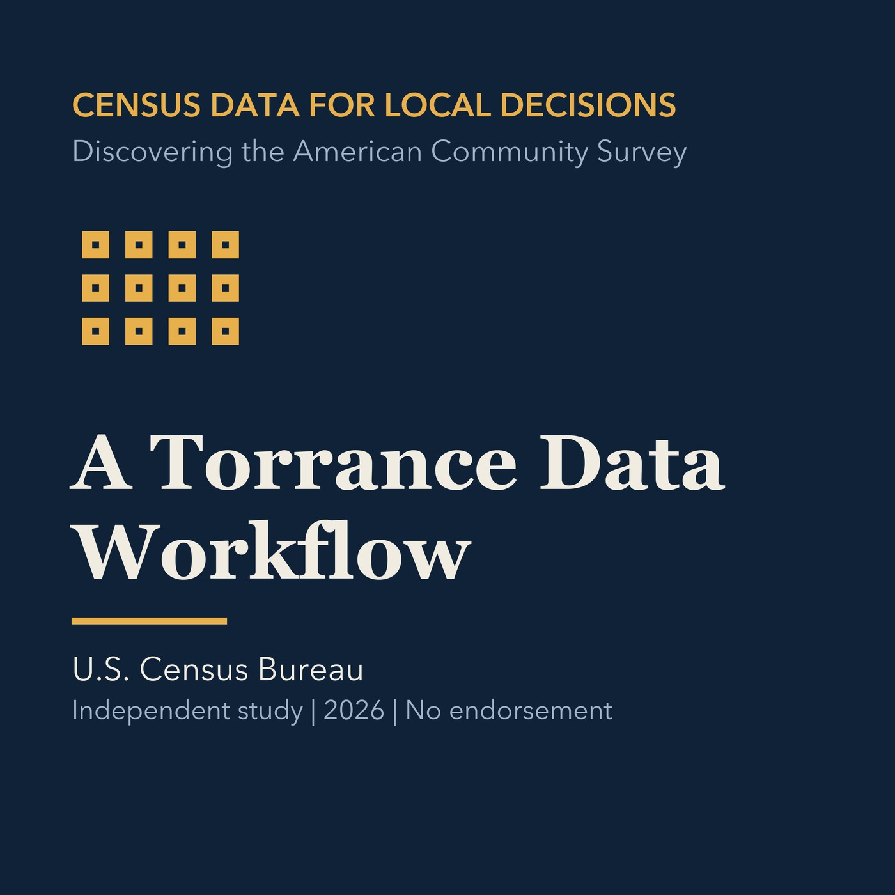

EPISODE 14
A Torrance Data Workflow
Combines question design, source selection, reproducibility, uncertainty, and local context.

- Stable GUID
ad2ea53e-3145-5f46-94cc-94ab8b1a98f5- Release
- census-academy-v2026.2
- SHA-256
8667ea9b2b0c128e9e13f050c8533f0ab81364e010e41b3b36195a724a3b579b